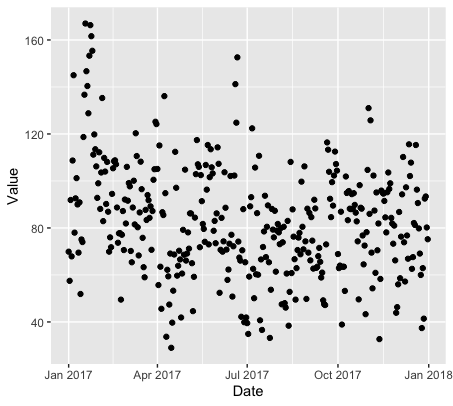
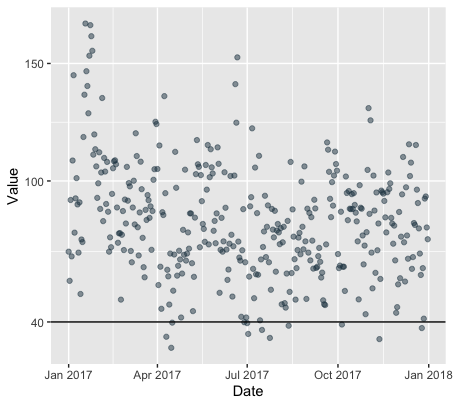
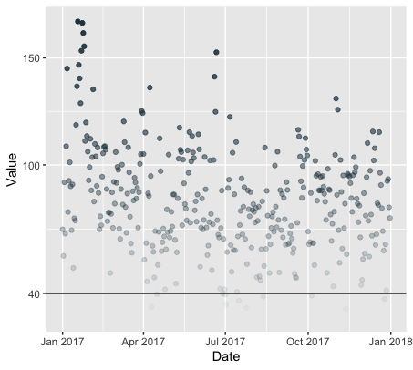
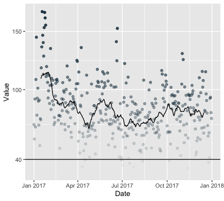
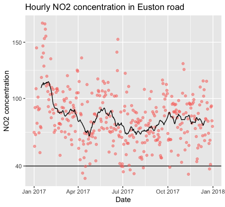

JOM299
Basile Simon
Created: 2019-01-21 Mon 21:31
week 2: air pollution in Euston road
Introduction to ggplot
ggplot is going to be our best friend for this module
Great link to bookmark: ggplot cheatsheet

Loading some data
library(readr)
library(dplyr)
library(ggplot2)
data <- read_csv("https://raw.githubusercontent.com/basilesimon/interactive-journalism-module/archive/2016-2017/week6/exercise/data.csv")
data %>% View()
data_annotated <- read_csv("https://raw.githubusercontent.com/basilesimon/interactive-journalism-module/archive/2016-2017/week6/exercise/data_annotated.csv")
df <- data_annotated
Basic plot
We pass our dataset data and define the aesthetics: an x and y axis:
ggplot(data, aes(x = Mean, y = Degrees)) +
geom_point()

Figure 2: img
Make the bubble size represent the number of people in this field
ggplot(data, aes(x = Mean, y = Degrees, size = Number)) +
geom_point()

Figure 3: img
Make the bubbles bigger by setting a maximum
we can reuse the previous chart we built, simply adding a layer with the plus (+) sign:
ggplot(data, aes(x = Mean, y = Degrees, size = Number)) +
geom_point() +
scale_size_area(max_size = 15)

Figure 4: img
Add a progressive colour scale depending on the number of people
that's a new property called `fill`. It will assign default colours for you.
ggplot(data, aes(x = Mean, y = Degrees, size = Number, fill=Number)) +
scale_size_area(max_size = 15) +
geom_point(shape=21)

Figure 5: img
Make our axis prettier and more sensible
again, re-using our previous chart, we set two additional layers that apply to the axis:
library(scales)
ggplot(data, aes(x = Mean, y = Degrees, size = Number, fill=Number)) +
scale_size_area(max_size = 15) +
geom_point(shape=21) +
scale_x_continuous(breaks = seq(0, 70000, 10000)) +
scale_y_continuous(labels = scales::percent)

Figure 6: img
A logarithmic y-axis, maybe?
useful for visualising extreme value differences: https://datavizblog.com/2013/03/26/how-to-visualize-data-with-extreme-value-differences/
library(scales)
ggplot(data, aes(x = Mean, y = Degrees, size = Number, fill=Number)) +
scale_size_area(max_size = 15) +
geom_point(shape=21) +
scale_x_continuous(breaks = seq(0, 70000, 10000)) +
scale_y_continuous(labels = scales::percent, trans=log2_trans())

Figure 7: img
Add labels so we can see clearer… or not
note both the label property in the aesthetics and the geomtext() layer.
ggplot(data, aes(x = Mean, y = Degrees, size = Number, fill=Number, label=Description)) +
geom_point(shape=21) +
scale_size_area(max_size = 15) +
#scale_y_continuous(trans=log2_trans()) +
geom_text(size = 2)

Figure 8: img
Colour the privileged gigs depending on annotation
ggplot(df, aes(x = Mean, y = Degrees, size = Number, fill=Category)) +
geom_point(shape=21) +
scale_size_area(max_size = 15) +
scale_x_continuous(breaks = seq(0, 70000, 10000)) +
scale_y_continuous(labels = scales::percent, trans=log2_trans())

Figure 9: img
Add some text annotation to the plot
We add two annotation layers with annotate(), with some x/y coordinates and which text to render.
colors <- ggplot(df, aes(x = Mean, y = Degrees, size = Number, fill=Category)) +
geom_point(shape=21) +
scale_size_area(max_size = 15) +
scale_x_continuous(breaks = seq(0, 70000, 10000)) +
scale_y_continuous(labels = scales::percent, trans=log2_trans())
annotate("text", x = 40000, y = .55, label = "Privileged gigs") +
annotate("text", x = 20000, y = .2, label = "Precarious gigs")
colors

Figure 10: img
"Annotation are the core of what we do" - Amanda Cox
finalPlot <- colors +
annotate("text", x = 31500, y = .05, label = "Construction and building") +
annotate("text", x = 12000, y = .52, label = "Education") +
annotate("text", x = 43500, y = .85, label = "Health sector") +
annotate("text", x = 10000, y = .15, label = "Hairdressers") +
annotate("text", x = 12000, y = .39, label = "Sports and recreation") +
annotate("text", x = 21000, y = .7, label = "Arts") +
annotate("text", x = 40000, y = .35, label = "Real estate") +
annotate("text", x = 14000, y = .08, label = "Taxis") +
annotate("text", x = 36000, y = .7, label = "IT and programming") +
annotate("text", x = 48000, y = .59, label = "Consultancies") +
annotate("text", x = 18000, y = .24, label = "Retail") +
annotate("text", x = 58000, y = .85, label = "Legal and accounting")
finalPlot

Figure 11: img
Fun with themes
library(ggthemes)
finalPlot + theme_minimal()
finalPlot + theme_economist() + scale_colour_economist()
finalPlot + theme_solarized() +
scale_colour_solarized("blue")
Facetting
finalPlot + facet_grid(. ~ Category)

Figure 12: img
Air pollution
Where is our data?
Import data
We start by loading in the CSV file containing our data:
library(readr)
df <- read_csv("data/airpollutioneuston.csv")
View(df)
CSV files
Our preferred data format. CSV is like an Excel spreadsheet, but just plain text:
name,surname,occupation
basile,simon,journalist
mick,jagger,musician
theresa,may,prime minister
| name | surname | occupation |
| basile | simon | journalist |
| mick | jagger | musician |
| theresa | may | prime minister |
WHO guideline: 40ug/m3 annual mean
The WHO guideline for NO2 pollution is to stay under 40ug/m3 annually.
Did this happen on Euston Road? We load dplyr to get some basic stats back from our dataset very quickly:
library(dplyr)
df %>% summary()
Calculating a mean
We could also calculate our mean manually with summarise - many handy functions we can use, actually
df %>% summarise(annual_mean = mean(Value))
annual_mean
<dbl>
1 82.8
# how many observations do we have?
df %>% summarise(observations = n())
observations
<int>
1 365
Clean data a bit
One issue with our dataset: ReadingDateTime column comes out as a string (see df %>% summary() showing character value).
We will need to parse that as a date!
Dates in programming
Dates as odd creatures. We parse strings and convert them into dates, but how does the computer know the format of the date?
2018-01-02 2018/02/01
These dates could be identical or different depending on how we parse them.
Date formats to the rescue
2018-01-02 parsed with %Y-%m-%d becomes 2nd Jan 2018 2018-01-02 parsed with %Y-%d-%m becomes 1st Feb 2018
Cleaning our air pollution data
We'll use British standards in this case:
df <- df %>% mutate(Date = as.Date(ReadingDateTime,
format = "%d/%m/%Y")) %>%
select(Date, Value)
Date Value
<date> <dbl>
1 2017-01-01 69.9
2 2017-01-02 57.5
3 2017-01-03 91.9
4 2017-01-04 67.9
Basic plot in ggplot
# install.packages("ggplot2")
library(ggplot2)
ggplot(df, aes(x = Date, y = Value)) +
geom_point()

What just happened?
We just used ggplot, the leading R visualisation package, to create a scatterplot. Ggplot is a grammar, ie a chart is composed of several bricks:
- a dataset,
- geometries,
- a coordinate system
Colours, opacity, scales
alphais opacity- colours are written in hex codes - What to consider when choosing colours
geom_hlineis a new geometry! We can also usegeom_vlinefor a vertical line
ggplot(df, aes(Date, Value), color='#254251') +
geom_point(alpha = 0.5, color="#254251") +
geom_hline(yintercept=40) +
scale_y_continuous(breaks = c(40, 100, 150, 200, 250),
labels = c(40, 100, 150, 200, 250))

Gratuitous styles
library(scales)
df$alpha <- rescale(df$Value, to=c(0,1))
ggplot(df, aes(Date, Value), color='#254251') +
geom_point(alpha = df$alpha, color="#254251") +
geom_hline(yintercept=40) +
scale_y_continuous(breaks = c(40, 100, 150, 200, 250),
labels = c(40, 100, 150, 200, 250))

Averages
We want to calculate a 30-day rolling average. This is super wasy in R: we need rollmean, from the zoo package.
Syntax:
rollmean(data$column, period)
#install.packages("zoo")
library(zoo)
df_mean <- df %>%
mutate(mean = rollmean(Value, 30, fill = NA))
ggplot(df_mean, aes(Date, Value), color='#254251') +
geom_hline(yintercept=40) +
geom_point(alpha = df$alpha, color="#254251") +
geom_line(aes(x = Date, y = mean)) +
scale_y_continuous(breaks = c(40, 100, 150, 200, 250),
labels = c(40, 100, 150, 200, 250))

All together
We can also use pipes to avoid mutating our dataset as we go along, like so:
dataframe %>%
do something on it %>%
like filtering, adding columns, etc %>%
then send it to ggplot like so %>%
ggplot() +
add geometries, etc
df <- read_csv("data/airpollutioneuston.csv")
df %>% filter(!is.na(Value)) %>%
mutate(Date = as.Date(ReadingDateTime,
format = "%d/%m/%Y"),
mean = rollmean(Value, 30, fill = NA)) %>%
select(Date, Value, mean) %>%
ggplot() +
geom_hline(yintercept = 40) +
geom_point(aes(x = Date, y = Value, alpha = 0.5, color = "steelblue")) +
geom_line(aes(x = Date, y = mean)) +
scale_y_continuous(breaks = c(40, 100, 150, 200, 250),
labels = c(40, 100, 150, 200, 250)) +
ggtitle("Hourly NO2 concentration in Euston road") +
xlab("Date") + ylab("NO2 concentration") + theme(legend.position="none")

Reading list
https://www.ted.com/talks/hans_rosling_shows_the_best_stats_you_ve_ever_seen
https://www.datacamp.com/community/blog/the-easiest-way-to-learn-ggplot2#gs.QnUNY8Y